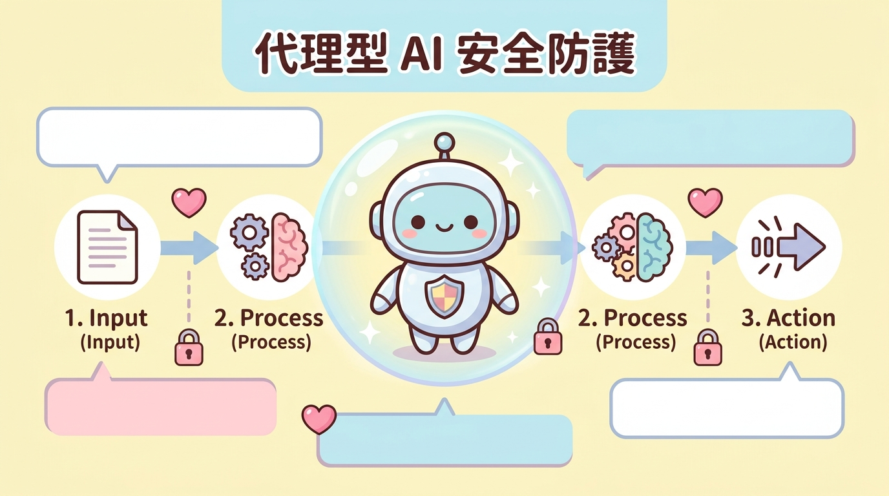

第一個轉折：AI 治理不再只是倫理題，而是主權題
過去談 AI 治理，常停在倫理原則、透明、負責任、公平這類語彙。但《資安週報第 51 期》抓到的上半年政策脈動，重點不是各國又多寫了幾份宣言，而是問題已往下沉到制度層：用什麼機制確認安全、誰擁有測試能力、國家是否掌握足夠的算力與標準話語權。
美國的路線偏向自願協作與國安導向，不另設繁重的預先審查；歐盟一邊簡化《AI Act》合規負擔，一邊推科技主權與資料中心容量布局；韓國與日本則把治理嵌入法律、行政流程、CAIO 與政府採購指引。表面上，這是三種不同的監管哲學；深一層看，都是在回答同一個問題：當 AI 成為基礎設施，國家能不能掌握它的風險、供應鏈與評估能力？
三種路線，收斂到同一件事
美國：國安導向
以既有聯邦機關、自律標準與國家安全測試協作，降低強制授權負擔，同時把前沿模型風險納入國安視野。
歐盟：合規加主權
簡化中小企業合規壓力，同時推動科技主權套案，降低對境外供應商與基礎設施的依賴。
韓日：流程嵌入
透過 AI 基本法、CAIO、採購指引與行政責任分工，把治理從口號變成可執行流程。
第二個轉折：治理工具開始從原則宣示走向落地
原文第二節最值得讀的地方，是它把「治理落地」拆成兩個層次：一個是企業與政府機關能照著做的操作規範，另一個是國家要投資的量測能力。前者像韓國的高影響 AI 判定與透明標示案例集、日本生成式 AI 採購與利用指引 2.0；後者則是英國、美國、日本、澳洲等地的 AI 安全研究機構，也就是 AISI 類型組織。
AISI 的角色很關鍵。它不是一般智庫，也不只是學術研究室，而是把模型能力、紅隊競賽、多步驟網路攻擊評測、部署前國安測試與跨國合作串起來的「安全驗證基礎設施」。換句話說，政策制定者未來不能只問「這個模型看起來有沒有問題」，而要問「我們有沒有能力測出它在特定場景中的能力邊界與失控風險」。
第三個轉折：有限護欄不是無用，而是不能被當成完整答案
資安週報引用 NIST 研究指出，任何有限的 guardrails 規則集都存在可規避的對抗性提示。這句話很容易被誤讀成「護欄沒用」。比較精準的理解是：部署前的提示詞規則、內容過濾與安全護欄仍然必要，但它們無法承擔「完整防護」這種不合理期待。
因此，治理重心要從一次性的部署前審查，轉向部署後監控、回饋、再設計與事件應變。這很像傳統資安從「架好防火牆就結束」演進到 SOC、EDR、弱點管理與持續偵測。AI 系統也需要同樣的生命週期治理：設計時預留監管能力，訓練與微調時管理資料風險，部署後持續觀測模型行為，出事後能快速回溯與修正。
導讀重點：真正成熟的 AI 治理，不是承諾「永遠不會出錯」，而是能證明組織知道風險在哪裡、如何監測、誰負責處理，以及系統如何在回饋後變得更穩健。
第四個轉折：代理型 AI 把治理焦點從「說什麼」推進到「做什麼」
代理型 AI 是本章最值得警覺的政策標的。傳統生成式 AI 的治理，常聚焦在回答是否錯誤、是否有偏見、是否洩漏個資；但代理型 AI 具備自主規劃、工具調用、資料讀取與外部執行能力，風險就不只是「它說錯了」，而是「它用誰的權限做了什麼事，做完能不能追得回來」。
這也是為什麼新加坡發布代理專屬治理框架，澳洲與五眼聯盟提醒最小權限與 human-in-the-loop，NIST NCCoE 概念文件把既有身分協定與 MCP 納入代理治理討論。這些政策訊號共同指向一個基本判斷：Agent 不能只被當成一段提示詞或一個聊天視窗，它應被視為具行動能力的數位主體，必須有身分、授權、權限隔離、工具呼叫紀錄與可稽核軌跡。

Agents Rule of Two 的治理含意
原文提到，德國 BSI 查核表援引 Meta 提出的 Agents Rule of Two，作為代理權限隔離參考。它的精神不是製造新名詞，而是用很直覺的方式提醒系統設計者：不要讓單一代理同時握有過多危險能力。
- 讀取機敏資料，例如內部文件、個資、金流或營運資料。
- 接收不可信輸入，例如外部網頁、客戶提示詞、未知附件或第三方內容。
- 對外執行有副作用的動作，例如寄信、改設定、寫入資料庫、呼叫交易 API。
一個代理若同時握有其中兩項以上，間接提示注入與權限濫用的破壞半徑就會急速放大。實務上，較穩健的作法是拆分代理、限制工具權限、加入人工核准節點，並讓每次工具呼叫都可追蹤。
台灣下一步：不要只問要不要立法，要問配套制度怎麼長出來
週報小結指出，我國也在同一波浪潮上，人工智慧基本法已公布施行；接下來的課題不是「要不要立法」，而是如何落實。對台灣而言，這句話的重量很重。因為台灣同時是高科技供應鏈核心、政府數位服務使用者、關鍵基礎設施防護者，也會是繁體中文 AI 應用的重要場域。
從資安與 AI 應用規劃角度看，台灣比較務實的優先順序，不是一次追求龐大完整制度，而是先建立可驗證、可稽核、可逐步擴充的骨架：高影響 AI 風險分類、政府採購與導入規範、部署後監控框架、代理型 AI 的身分與授權規則，以及 SBOM for AI 類透明揭露格式。這些工具不必一開始就完美，但必須能讓組織知道自己用了什麼、風險在哪裡、誰能處理、如何回溯。